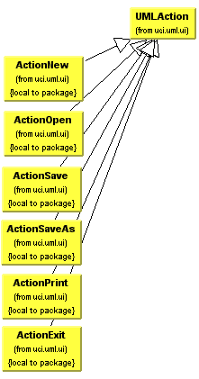

|  | |
| Description There are many more classes that extend UMLAction, but many have been omitted for the sake of clarity. Notice that the two images above paralell because they represent the same actions. This diagram could be repeated for each of the menus. |